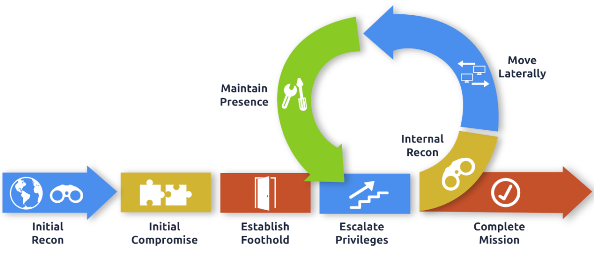

Lateral Movement & Pivoting
Lateral Movement & Pivoting

Using Networks in Tryhackme:
First, Download a different vpn file. Named: lateralmovementandpivoting.ovpn from Tryhackme
Then,
You will have to configure DNS on the host on which you are running the VPN connection. In order to configure our DNS, we must edit the /etc/systemd/resolved.conf file. Uncomment the DNS line and add the IP of THMDC: (As Shown in Network Diagram Above)

Finally, Restart the service:
systemctl restart systemd-resolved
Or
Add the DNS in GUI Network Manager/nmtui tool (1st is the THM DNS then use default in the 2nd place).
and restart the Network Manager service:
systemctl restart NetworkManager
Testing DNS Status
nslookup thmdc.za.tryhackme.com

Note: For this box, nslookup didn't work. However, DNS is correctly setup.
Requesting Your Credentials
To simulate an AD breach, you will be provided with your first set of AD credentials. Once your networking setup has been completed, on your Attack Box, navigate to http://distributor.za.tryhackme.com/creds to request your credential pair. Click the "Get Credentials" button to receive your credential pair that can be used for initial access.

Credentials Received:
Username: arthur.campbell
Password: Pksp9395
This credential pair will provide you SSH access to THMJMP2.za.tryhackme.com. THMJMP2 can be seen as a jump host into this environment, simulating a foothold that you have achieved.
For SSH access, you can use the following command:
ssh za\\<AD Username>@thmjmp2.za.tryhackme.com
What is Lateral Movement?
Simply put, lateral movement is the group of techniques used by attackers to move around a network. Once an attacker has gained access to the first machine of a network, moving is essential for many reasons, including the following: - Reaching our goals as attackers - Bypassing network restrictions in place - Establishing additional points of entry to the network - Creating confusion and avoid detection.
While many cyber kill chains reference lateral movement as an additional step on a linear process, it is actually part of a cycle. During this cycle, we use any available credentials to perform lateral movement, giving us access to new machines where we elevate privileges and extract credentials if possible. With the newfound credentials, the cycle starts again.

A Quick Example (Very Nicely Explained)
Suppose we are performing a red team engagement where our final goal is to reach an internal code repository, where we got our first compromise on the target network by using a phishing campaign. Usually, phishing campaigns are more effective against non-technical users, so our first access might be through a machine in the Marketing department.
Marketing workstations will typically be limited through firewall policies to access any critical services on the network, including administrative protocols, database ports, monitoring services or any other that aren't required for their day to day labour, including code repositories.
To reach sensitive hosts and services, we need to move to other hosts and pivot from there to our final goal. To this end, we could try elevating privileges on the Marketing workstation and extracting local users' password hashes. If we find a local administrator, the same account may be present on other hosts. After doing some recon, we find a workstation with the name DEV-001-PC. We use the local administrator's password hash to access DEV-001-PC and confirm it is owned by one of the developers in the company. From there, access to our target code repository is available.
Simple Lateral Movement

Notice that while lateral movement might need to be used to circumvent firewall restrictions, it is also helpful in evading detection. In our example, even if the Marketing workstation had direct access to the code repository, it is probably desirable to connect through the developer's PC. This behaviour would be less suspicious from the standpoint of a blue team analyst checking login audit logs.
The Attacker's Perspective
There are several ways in which an attacker can move laterally. The simplest way would be to use standard administrative protocols like WinRM, RDP, VNC or SSH to connect to other machines around the network. This approach can be used to emulate regular users' behaviours somewhat as long as some coherence is maintained when planning where to connect with what account. While a user from IT connecting to the web server via RDP might be usual and go under the radar, care must be taken not to attempt suspicious connections (e.g. why is the local admin user connecting to the DEV-001-PC from the Marketing-PC?).
Attackers nowadays also have other methods of moving laterally while making it somewhat more challenging for the blue team to detect what is happening effectively. While no technique should be considered infallible, we can at least attempt to be as silent as possible. In the following tasks, we will look at some of the most common lateral movement techniques available.
Administrators and UAC
While performing most of the lateral movement techniques introduced throughout the room, we will mainly use administrator credentials. While one might expect that every single administrator account would serve the same purpose, a distinction has to be made between two types of administrators:
◇ Local accounts part of the local Administrators group
◇ Domain accounts part of the local Administrators group
The differences we are interested in are restrictions imposed by User Account Control (UAC) over local administrators (except for the default Administrator account). By default, local administrators won't be able to remotely connect to a machine and perform administrative tasks unless using an interactive session through RDP. Windows will deny any administrative task requested via RPC, SMB or WinRM since such administrators will be logged in with a filtered medium integrity token, preventing the account from doing privileged actions. The only local account that will get full privileges is the default Administrator account.
Domain accounts with local administration privileges won't be subject to the same treatment and will be logged in with full administrative privileges.
This security feature can be disabled if desired, and sometimes you will find no difference between local and domain accounts in the administrator's group. Still, it's essential to keep in mind that should some of the lateral movement techniques fail, it might be due to using a non-default local administrator where UAC is enforced. You can read more details about this security feature here.